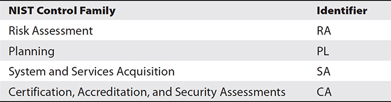
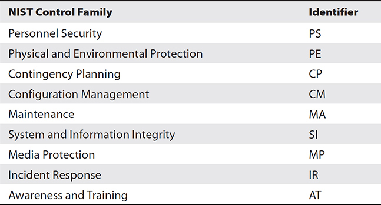
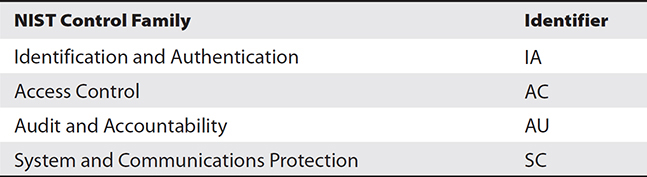

CHAPTER 31
Security Controls
In this chapter, you will
• Learn about the three categories of security controls
• Explore different types of security controls
Security controls are the tools used to reduce risk in the enterprise. There are many different types of security controls, and this chapter looks at the different categories and types to provide a means of understanding and classifying controls.
Certification Objective This chapter covers CompTIA Security+ exam objective 5.1: Compare and contrast various types of controls.
Security Controls
Security controls are the mechanisms employed to minimize exposure to risk and mitigate the effects of loss. Using the security attributes of confidentiality, integrity, and availability (CIA) associated with data, it is incumbent upon the security team to determine the appropriate set of controls to achieve the security objectives.
Controls can be of a variety of types, as described in this chapter. The different categories of controls do not act as a taxonomy, as there are overlapping descriptions and some controls’ categories are passed down from third-party policies and procedures.

NOTE The National Institute of Standards and Technology (NIST) provides a catalog of controls in its NIST SP 800-53 series. The current revision, revision 5, lists over 600 controls grouped into 18 functional categories. The 18 functional categories are grouped under three major categories: Management, Technical, and Operational. Although the vast majority of these controls are associated with the electronic security of information, many of them extend into the physical world as well.

EXAM TIP The types of security controls are commonly tested on the exam—memorization is recommended.
Categories
Three categories of security controls are specified in a variety of defining documents, and these categories have become the de facto standard for the cybersecurity industry. The use of categories separates the controls into separate groups based on what the control uses as its lever: managerial activity, operational activity, or technical control. Each of these is described in the following sections. For some controls, it is possible that they have aspects that span more than one category.
Managerial
Managerial controls are those that are based on overall risk management. These security controls focus on the management of risk or the management of the cybersecurity system. The use of cybersecurity audits is an example of a managerial control. Table 31-1 lists the managerial controls.

Table 31-1 Managerial Controls
NOTE The NIST SP 800 series refers to managerial controls as management controls.
Operational
An operational control is a policy or procedure used to limit security risk. These security controls are primarily implemented and executed by people, as opposed to systems. Instructions to guards are an example of an operational control. Table 13-2 lists the operational controls.

Table 31-2 Operational Controls
Technical
A technical control uses some form of technology to address a physical security issue. These security controls are primarily implemented and executed by the information system through mechanisms contained in its hardware, software, or firmware components. Biometrics is an example of a technical control. Table 31-3 lists the technical controls.

Table 31-3 Technical Controls
EXAM TIP The main difference between operational and technical controls is that operational controls are those that people initiate and follow, whereas technical controls are typically automated and involve a machine to execute.
Control Types
Controls can also be categorized by control type. The cybersecurity industry recognizes several different control types, and while these categories can be descriptive, they are not a taxonomy because they are not necessarily exclusive. Controls can fit into multiple types, depending on deployment and use. A door lock is an example of both a physical control and a preventative control.
Preventative
A preventative control is one that prevents specific actions from occurring, such as a mantrap prevents tailgating. Preventative controls act before an event, preventing it from advancing. A firewall is an example of a preventative control, as it can block access to a specific resource.
EXAM TIP The key element in passing Exam Objective 5.1 is the ability to compare and contrast various types of controls. How are they alike (compare) and how are they different (contrast)? Understanding the differences can be subtle. For instance, do laws with punishment, if enforced, prevent attacks? Laws may deter attackers, but they do not prevent them from attacking if the deterrent doesn’t dissuade them from deciding to attack.
Detective
A detective control is one that facilitates the detection of a physical security breach. Detective controls act during an event, alerting operators to specific conditions. Alarms are common examples of detective controls. An IDS is an example of an IT security alarm that detects intrusions.
Corrective
A corrective control is used after an event, in an effort to minimize the extent of damage. Load balancers and redundant systems act to reduce the risk from system overloading and are thus corrective controls. Backups are a prime example of a corrective control, as they can facilitate rapid resumption of operations.
Deterrent
A deterrent control acts to discourage the attacker by reducing the likelihood of success from the perspective of the attacker. Any control that increases the cost to an attacker is a deterrent control. An example would be laws and regulations that increase punishment, increasing risk and costs for the attacker. Another example would be the use of salts for password hashes to increase the cost of building rainbow tables.
Compensating
A compensating control is one that is used to meet a requirement when there is no control available to directly address the threat. Fire suppression systems do not prevent fire damage, but if properly employed, they can mitigate or limit the level of damage from fire.
EXAM TIP The previous five types of controls tend to be exclusive of each other—they describe the point of interaction of the control with the attacker’s tools, techniques, and processes.
Physical
A physical control is one that prevents specific physical actions from occurring, such as a mantrap prevents tailgating. Physical controls prevent specific human interaction with a system and are primarily designed to prevent accidental operation of something. Physical controls act before an event, preventing it from actually occurring. The use of covers over critical buttons is one example, as is a big red “STOP” button, positioned so it is easily reachable. The former stops inadvertent activation, while the latter facilitates easy activation in an emergency. For further information, Chapter 15, “Physical Security,” has a section devoted to physical security controls.
EXAM TIP Physical controls are separate from the previous descriptors and can be used independently of them. It is possible to have a control that is a technical, physical, and preventative control (for example, a door lock).
Chapter Review
In this chapter, you became acquainted with the different categories and types of security controls. Security controls are divided into three categories: managerial, operational, and technical. Security controls can also be categorized by the type of control. The different types of controls covered in the chapter are preventative, detective, corrective, deterrent, compensating, and physical.
EXAM TIP Look for the word category or type in the question. Categories are managerial, operational, and technical. Types are preventative, detective, corrective, deterrent, compensating, and physical.
Questions
To help you prepare further for the CompTIA Security+ exam, and to test your level of preparedness, answer the following questions and then check your answers against the correct answers at the end of the chapter.
1. Which type of security control is used after the event, in an effort to minimize the extent of damage?
A. Deterrent
B. Corrective
C. Preventative
D. Detective
2. Which type of security control is used to meet a requirement when the requirement cannot be directly met?
A. Preventative
B. Physical
C. Deterrent
D. Compensating
3. The use of a penetration test to determine vulnerabilities is an example of what category of control?
A. Operational
B. External
C. Managerial
D. Technical
4. The use of combination locks as a security control procedure to limit physical security risk is an example of what category of control?
A. Physical
B. Technical
C. Operational
D. Corrective
5. A mantrap is an example of which type security control? (Choose all that apply.)
A. Physical
B. Corrective
C. Administrative
D. Preventative
6. Which of the following is not a category of security controls?
A. People
B. Managerial
C. Technical
D. Operational
7. Which category of control is most likely to be automated?
A. Corrective
B. Technical
C. Operational
D. Compensating
8. There is no direct way to detect and respond to a specific threat. What is the best control type to employ for this case?
A. Technical
B. Corrective
C. Preventative
D. Compensating
9. An intrusion detection system is an example of what control type?
A. Detective
B. Technical
C. Compensating
D. Operational
10. Which of the following is the fastest category of control when responding to a known threat?
A. Operational
B. Technical
C. Administrative
D. Managerial
Answers
1. B. Corrective controls are used after the event, in an effort to minimize the extent of damage. A deterrent control acts to influence the attacker by reducing the likelihood of success. A preventative control is one that prevents specific actions from occurring. A detective control is one that facilitates the detection of a security breach.
2. D. A compensating control is one that is used to meet a requirement when the requirement cannot be directly met. Fire suppression systems do not prevent fire damage, but if properly employed, they can mitigate or limit the level of damage from fire. A preventative control is one that prevents specific actions from occurring. A physical control is one that prevents specific physical actions from occurring, such as a mantrap prevents tailgating. A deterrent control acts to influence the attacker by reducing the likelihood of success.
3. C. A penetration test is a form of risk assessment and thus is a managerial action, as it advises management of the current risk posture associated with a system.
4. C. An operational control is a policy or procedure used to limit security risk. The key word in the question is category.
5. A and D. It is possible for a specific security control to fall into more than one type. Because a mantrap is a physical barrier that prevents tailgating, it is both a physical control and a preventative control. Corrective controls are used after the event, in an effort to minimize the extent of damage. An administrative control is simply a distractor.
6. A. People is not a defined category of security control. Security controls that function through people’s actions are called operational controls.
7. B. Technical controls are the most likely to be automated, as they are machine based.
8. D. Compensating controls are used when there is no direct way to address a risk.
9. A. The key word in the question is type, making detective the correct answer. If the question asked for the category, the correct answer would be technical.
10. B. Technical controls can be automated and can thus be the fastest to respond to an incident.